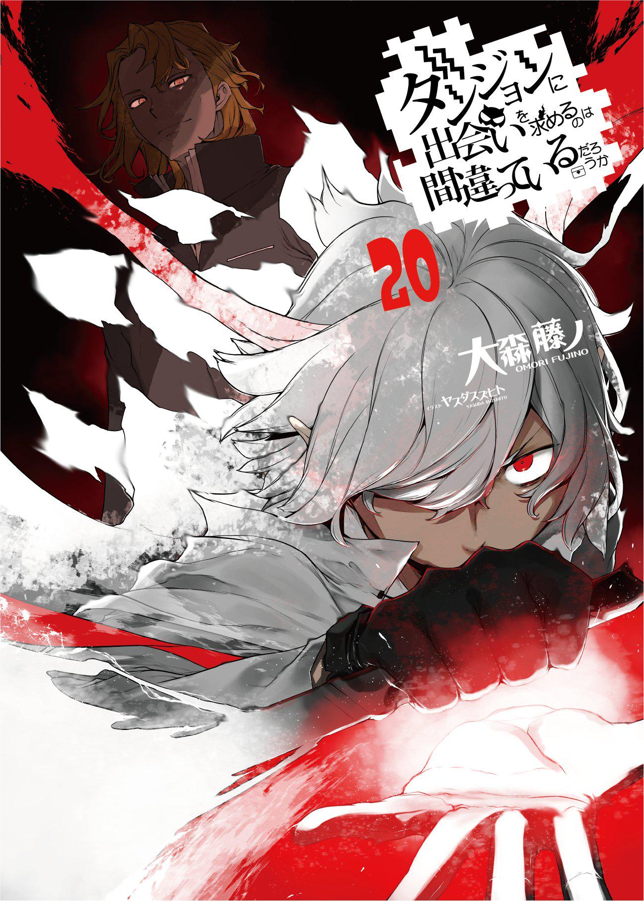
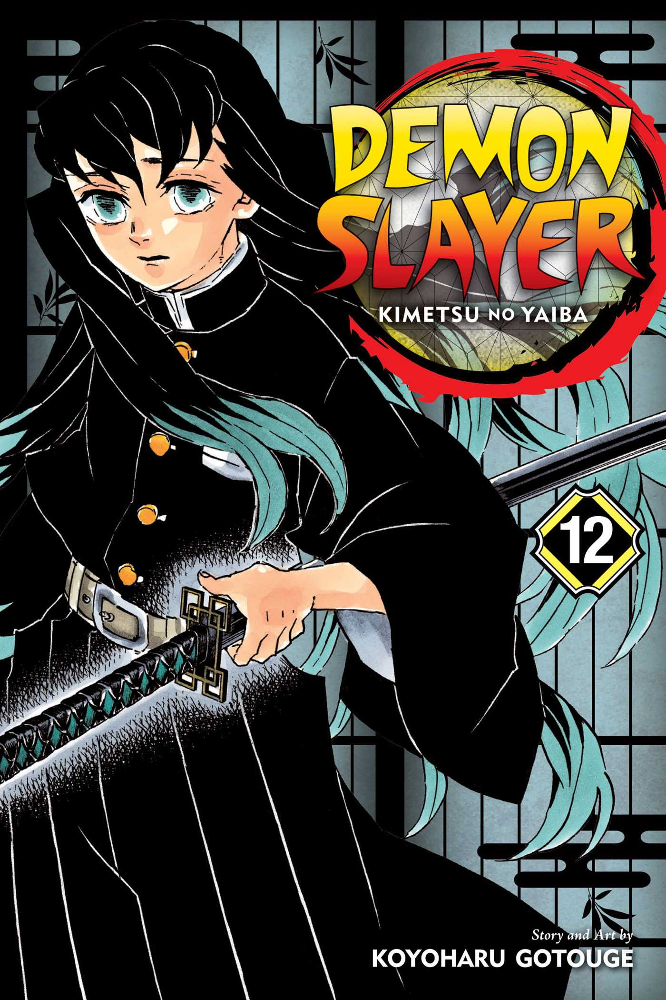
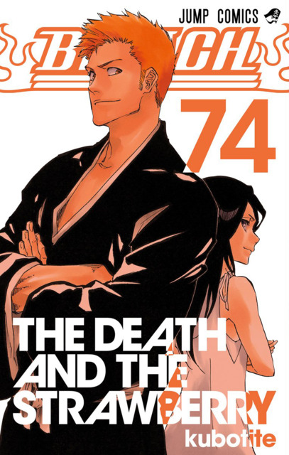

Featured Stories
Choose a story and discover a new world.

Danmachi
Bell Cranel, a young adventurer, dreams of becoming a great hero while exploring the dangerous Dungeon beneath the city of Orario.

Demon Slayer
Tanjiro Kamado joins the Demon Slayer Corps after his family is attacked by demons, searching for a way to save his sister Nezuko.
Black Clover
Asta, a boy born without magic, refuses to give up on his dream of becoming the Wizard King and proves that determination can overcome any challenge.
Jujutsu Kaisen
Yuji Itadori becomes involved in the world of Jujutsu Sorcerers after encountering a dangerous cursed object and supernatural forces.

Bleach: TYBW
Ichigo Kurosaki and the Soul Reapers face a powerful new threat as the Quincy army launches an attack against the Soul Society.
Mushoku Tensei
Reborn in a magical world, Rudeus Greyrat begins a new life while learning magic, building relationships, and exploring the world around him.